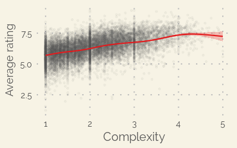
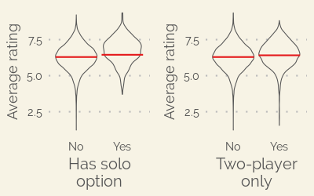
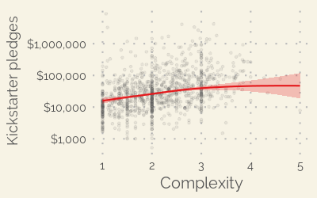

BoardGameGeek's XML API2 was used to obtain data on all games in the database. Entries with missing values for ratings; complexity; play time; or suggested, minumum, or maximum number of were discarded.
The suggested number of players and suggested minimum age are collected on BoardGameGeek as community polls. For both of these metrics, the highest-voted option was used in order to obtain a single value for each game. For minimum age, where community poll data does not exist, the publisher's listed minimum age was used instead when possible.
Kickstarter data, excluding campaign descriptions, was obtained from pre-compiled sets from Web Robots and members of the Kickscraper GitHub community. Only games from the "tabletop games" category on Kickstarter were used.
Successfully-funded Kickstarter games were matched to the BoardGameGeek database by title. Titles were counted as a match if, after removing punctuation and making all characters lowercase, the Kickstarter name starts with the BoardGameGeek title. In the event of multiple matches, only the match with the shortest name was kept.
Generalized additive models (GAMs) were used to assess the effects of various game features on average user ratings and Kickstarter pledge totals (in US dollars) to successful campaigns. Models were constructed using the R package mgcv.
For both user ratings and Kickstarter pledge totals, the relationship to continuous variables in the model is not strictly linear, so smoothing terms were included as thin plate regression splines.
Inclusion or exclusion of each term in the model was determined by comparing generalized cross validation scores for models with and without the term in question.
Two categorical variables were included as possible model terms: two-player only (where the minumum and maximum number of players are both equal to two) and the inclusion of a solo/solitaire play option (where the minimum number of players is one).
Seven of the non-tag features considered significantly affect BoardGamegeek user ratings: year, complexity, suggested number of players, minimum age, play time (log scale), support for solo play, and two-player only or not.
Below, we can see examples of some of these variables. The red lines trace the model predictions for the given variable, while the shaded band shows two standard errors away from the mean.
 Click on the “Explore” tab at the top of the page to view all of the significant variables and to see how the ratings of individual games compare to the model predictions. The model has an R2 value of ~0.46.
In contrast to the user ratings model, only four non-tag features considered significantly affect total Kickstarter pledge amounts: launch date, complexity, minimum age, and play time (log scale).
Below, we see that similar to case for user ratings, Kickstarter pledges increase with greater game complexity up to a point, and then either plateau or even decrease at the upper limits of the complexity scale.
Play time and minimum age show similar, but less pronounced patterns, likely in part because these variables are all positively correlated along at least part of their ranges.
For Kickstarter pledges, the model has an R2 value of ~0.42.
For most of the ~30% of tabletop game Kickstarter campaigns that fail to meet their funding goal, the games do not exist in the BoardGameGeek database (because they never got made). In order to explore the factors that contribute to a campaign's success or failure, we can use natural language processing on the campaign descriptions from each game's Kickstarter page.
For each successful or failed campaign, blurbs and full descriptions were scraped from the Kickstarter website and stripped of non-text elements. Text was tokenized into sentences and words and lemmatized using the Python package spaCy.
The data were stripped of stop words and further tokenized into unigrams and bigrams using the R package tidytext. Terms that did not appear in at least 0.1% of campaigns were excluded.
Success or failure was modeled using a logistic regression with lasso regularization using the R package glmnet. Terms were coded using a simple binary presence/absense bag-of-words model, which displayed better predictive accuracy than frequency-weighted models. Bigrams were given a 0.5 penalty in the lasso in order to normalize their presence relative to unigrams in the combined model.
The final model was built using 100 iterations of 10-fold cross-validation, averaging coefficients across iterations that include a given term. The area under the receiver operating characteristic curve (ROC AUC) was used to assess predictive performance. The final model's ROC AUC is ~0.75.
631 terms were retained with non-zero coefficients between the 100 final model iterations. Of these, only 5 were present in fewer than 70 model iterations.
Terms retained by the model tend to fall into two general categories: game-related and campaign-related.
Among terms related to the games themselves are strong positive predictors such as “cooperative” and “miniature game” and strong negative predictors such as “chess” and “randomly select”.
Terms related to the Kickstarter campaigns moreso than the games include the positive predictors “promo card” and “tom” (possibly due to influential game reviewer Tom Vasel) and the negative predictor “processing fee”.
The full set of predictive terms can be viewed under the “Explore” tab at the top of the page.